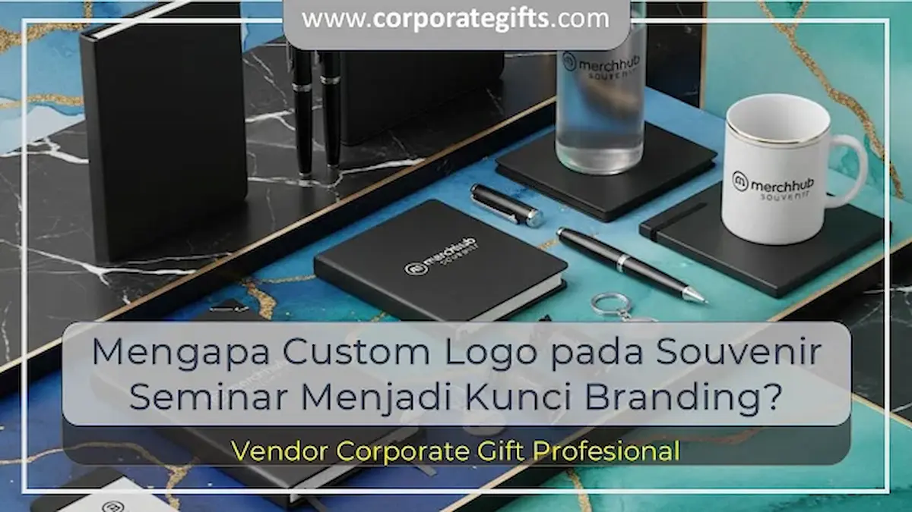

Corporate Gifts ID - Custom logo pada souvenir seminar menjadi kunci branding karena mampu mengubah benda fungsional harian, seperti tumbler, tote bag, buku agenda, atau pulpen kerja, menjadi media promosi bergerak yang terus mengingatkan penerimanya pada kredibilitas dan identitas penyelenggara. Setiap kali cinderamata tersebut digunakan dalam rutinitas kerja, pesan visual perusahaan terpapar secara konsisten tanpa terkesan agresif.
Dalam lanskap bisnis modern yang sarat kompetisi, detail kecil sering kali menjadi pembeda besar antara acara yang mudah terlupakan dengan konferensi yang meninggalkan impresi mendalam. Pengadaan paket seminar kit dengan sentuhan logo presisi bukan sekadar pelengkap seremonial, melainkan investasi strategis dalam membangun brand equity jangka panjang.
Poin Kunci Keunggulan Custom Logo pada Souvenir:
- Retensi Ingatan (Brand Recall): Menjaga nama perusahaan tetap berada di benak peserta jauh setelah sesi seminar berakhir.
- Validasi Kredibilitas: Cinderamata berlogo resmi mencerminkan keseriusan manajemen dan tata kelola acara yang profesional.
- Efisiensi Biaya Promosi: Memberikan cost-per-impression (CPI) paling rendah karena barang fungsional dipakai berbulan-bulan hingga bertahun-tahun.
- Diferensiasi Kompetitif: Membedakan institusi Anda dari kompetitor lain dalam ajang pameran, simposium, maupun konferensi multisektor.
Custom Logo: Lebih dari Sekadar Hiasan Visual
Logo adalah representasi grafis dari visi, filosofi, dan reputasi yang dibangun suatu korporasi selama bertahun-tahun. Ketika identitas visual tersebut diaplikasikan pada cinderamata bermutu, benda mati tersebut seketika bermutasi menjadi instrumen komunikasi representatif.
Sebagai ilustrasi, perusahaan perbankan atau teknologi yang menyelenggarakan pelatihan eksekutif dan membagikan notebook agenda kulit dengan logo emboss elegan akan mendapati bahwa buku catatan tersebut tetap dibawa peserta ke meja rapat klien mereka. Setiap halaman yang dibuka memperluas jangkauan paparan brand secara natural dan organik ke lingkungan profesional lainnya.
5 Alasan Utama Custom Logo Menjadi Kunci Keberhasilan Branding
Mengapa penempatan logo yang terencana sangat krusial pada setiap cinderamata seminar? Berikut adalah lima faktor penggerak utamanya:
-
Meningkatkan Brand Awareness dan Recall:
Souvenir berlogo mempermudah audiens mengidentifikasi institusi Anda seketika. Pola paparan visual berulang (mere-exposure effect) secara psikologis membangun rasa familiaritas dan kepercayaan yang kuat. -
Membangun Citra Profesional dan Kredibel:
Barang cinderamata polos tanpa identitas terasa hambar dan generik. Sebaliknya, aplikasi logo yang rapi menegaskan bahwa instansi Anda memiliki standar mutu tinggi dan menghargai setiap peserta yang hadir. -
Media Promosi Jangka Panjang Berbiaya Hemat:
Berbeda dari iklan digital yang lenyap saat anggaran habis, produk fungsional seperti tumbler stainless vacuum atau tote bag kanvas memiliki masa pakai harian 1 hingga 3 tahun, menghasilkan ribuan impresi visual gratis. -
Membedakan Diri dari Kompetitor (Stand Out):
Dalam pameran industri atau konferensi besar di mana puluhan booth membagikan cinderamata, kemasan dan desain logo yang estetik menjadikan merchandise Anda yang paling diperebutkan dan disimpan. -
Menciptakan Emotional Value dan Rasa Memiliki:
Menerima cinderamata eksklusif berlogo resmi membuat peserta merasa diakui sebagai bagian dari komunitas profesional terpilih, menumbuhkan loyalitas kemitraan yang langgeng.

Penerapan teknik sablon dan laser engraving menghasilkan detail logo yang tajam dan tahan lama.
Pilihan Teknik Cetak Logo Sesuai Material Souvenir
Keberhasilan branding tidak hanya bergantung pada bentuk logo, tetapi juga pada kecocokan teknik cetak yang digunakan pada material fisik cinderamata. Pemilihan metode cetak yang salah dapat menyebabkan logo mudah luntur, mengelupas, atau terlihat buram.
Beberapa teknik kustomisasi logo standar industri yang umum diterapkan meliputi:
- Laser Engraving / Grafir: Mengikis lapisan permukaan logam atau kayu dengan sinar laser presisi tinggi. Hasilnya bersifat permanen, tahan gores, dan memberikan nuansa monokrom mewah pada tumbler stainless serta pulpen metal promosi.
- UV Printing (Direct to Film/Substrate): Mencetak tinta warna beresolusi tinggi dengan pengeringan sinar ultraviolet. Mampu mereproduksi gradasi warna kompleks dan logo berdetail halus pada permukaan datar seperti powerbank atau kartu flashdisk.
- Emboss / Deboss: Memberikan efek timbul (emboss) atau cekung ke dalam (deboss) pada material kulit sintetis PU tanpa menggunakan tinta, sangat ideal untuk cover buku agenda dan card holder VIP.
- Screen Printing / Sablon: Pilihan ekonomis untuk produksi massal berbahan kain seperti tote bag kanvas, spunbond, dan payung lipat promosi.
Tabel: Perbandingan Karakteristik Teknik Cetak Logo pada Souvenir
Tabel berikut memetakan komparasi metode kustomisasi logo guna membantu tim pengadaan menentukan pilihan paling tepat sesuai kebutuhan acara:
| Teknik Cetak | Material Paling Cocok | Daya Tahan | Karakter Visual & Keunggulan |
|---|---|---|---|
| Laser Engraving | Stainless Steel, Logam, Kayu, Bambu | Permanen (Seumur Hidup) | Elegan, monokrom perak/emas, anti-luntur, tahan goresan fisik. |
| UV Digital Print | Plastik ABS, Akrilik, Logam, Kulit Sintetis | Sangat Tinggi (2-4 Tahun) | Full color, mendukung gradasi kompleks, tajam dan cerah seketika. |
| Hot Stamping / Deboss | Kulit Asli, Kulit PU, Kertas Tebal Hardcover | Permanen (Tidak Luntur) | Tekstur raba 3D mewah, opsi foil emas/silver, sangat eksklusif. |
| Screen Printing (Sablon) | Kain Kanvas, Blacu, Spunbond, Payung | Sedang - Tinggi (1-2 Tahun) | Sangat hemat untuk pesanan ribuan pcs, warna solid cerah. |
Tips Efektif Menerapkan Custom Logo pada Souvenir Seminar
Agar cinderamata seminar menghasilkan dampak branding yang maksimal tanpa mengorbankan estetika, perhatikan panduan praktis berikut:
- Gunakan Desain Vektor Berkualitas Tinggi: Siapkan file master logo dalam format vektor (.AI, .EPS, atau PDF beresolusi tajam) agar garis logo tidak pecah saat disesuaikan dengan ukuran cetak produk.
- Jaga Proporsi dan Posisi yang Seimbang: Hindari mencetak logo terlalu besar yang dapat membuat produk terlihat seperti papan iklan berjalan. Logo berukuran proporsional di sudut atau tengah produk justru memancarkan kesan prestisius yang membuat penerima bangga memakainya di ruang publik.
- Konsisten dengan Brand Color Palette: Sesuaikan warna dasar produk cinderamata dengan palet warna korporat Anda untuk membangun identitas visual yang harmonis.
- Prioritaskan Mutu Produk Fisik: Logo mewah yang tercetak di atas barang berkualitas buruk justru merusak citra perusahaan. Pastikan bahan dasar souvenir memiliki ketahanan yang teruji.
Pertanyaan Seputar Custom Logo pada Souvenir Seminar (FAQ)
Kesimpulan: Maksimalkan Nilai Investasi Promosi Anda
Custom logo pada souvenir seminar bukan sekadar ornamen tambahan, melainkan strategi pemasaran cerdas yang mengubah benda fungsional menjadi duta merek berjalan. Dengan kurasi produk yang tepat, pemilihan teknik cetak berstandar industri, dan tata letak logo yang proporsional, perusahaan Anda dapat membangun reputasi kredibel sekaligus mempererat hubungan jangka panjang dengan setiap peserta.